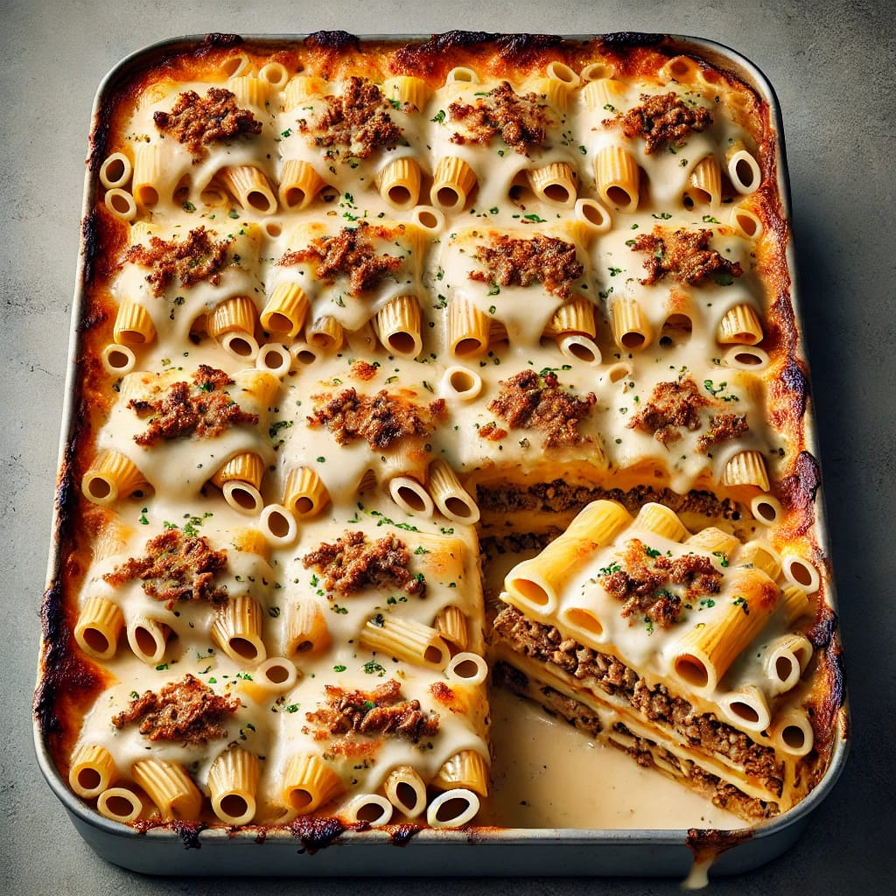

Makarona Bashamel

- Ingrediants of Makarona Bashmel
- For Pasta
- 500g macaroni (penne or any tubular pasta)
- Salt (for boiling the pasta)
- tablespoon of oil (for boiling)
- 500g minced beef or lamb
- onion, finely chopped
- tablespoons vegetable oil
- teaspoon ground black pepper
- teaspoon ground cinnamon (optional)
- Salt to taste
- tablespoon tomato paste (optional)
- cups of milk
- tablespoons all-purpose flour
- tablespoons butter
- Salt and pepper to taste
- A pinch of nutmeg (optional)
- egg (optional, to be mixed into the béchamel sauce for a richer texture)
- 1/2 cup shredded mozzarella or Parmesan cheese (optional)
- And put in oven for about 20 minute